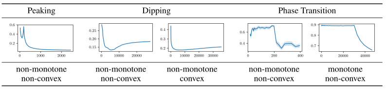
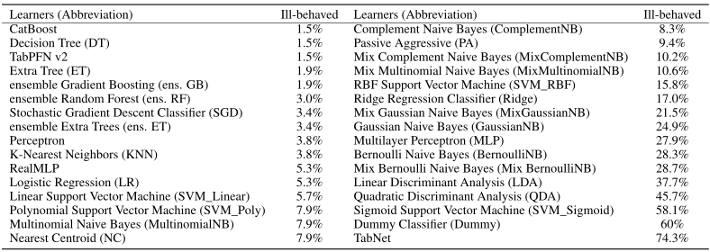

Sample-wise learning curves plot performance versus training set size. They are useful for studying scaling laws and speeding up hyperparameter tuning and model selection. Learning curves are often assumed to be well-behaved: monotone (i.e. improving with more data) and convex. By constructing the Learning Curves Database 1.1 (LCDB 1.1), a large-scale database with high-resolution learning curves including more modern learners (CatBoost, TabNet, RealMLP, and TabPFN), we show that learning curves are less often well-behaved than previously thought. Using statistically rigorous methods, we observe significant ill-behavior in approximately 15% of the learning curves, almost twice as much as in previous estimates. We also identify which learners are to blame and show that specific learners are more ill-behaved than others. Additionally, we demonstrate that different feature scalings rarely resolve ill-behavior. We evaluate the impact of ill-behavior on downstream tasks, such as learning curve fitting and model selection, and find it poses significant challenges, underscoring the relevance and potential of LCDB 1.1 as a challenging benchmark for future research.
265 OpenML datasets, 28 learning algorithms, mean ± standard error across 25 random splits


@inproceedings{yan2025lcdb,
title = {LCDB 1.1: A Database Illustrating Learning Curves Are More Ill-Behaved Than Previously Thought},
author = {Yan, Cheng and Mohr, Felix and Viering, Tom},
booktitle = {Advances in Neural Information Processing Systems},
volume = {38},
year = {2025}
}